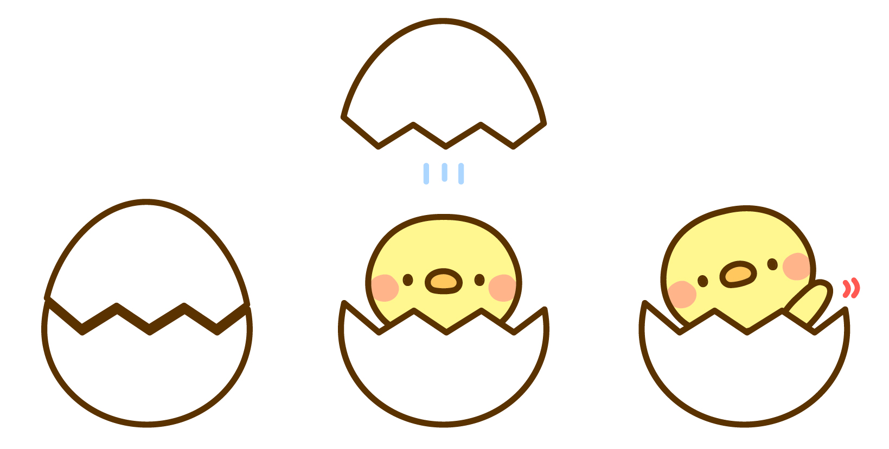

CSSのtransition-timing-funciton、animation-timing-funcitonにはstepsという関数を指定することができ、このstepsを使えばコマ送りでアニメーションを実行させることができます。
ナユタン星人のMVみたいな
.dance {
animation: dance 0.6s steps(1) infinite;
}
@keyframes dance {
0% {
transform: scaleX(1);
}
50% {
transform: scaleX(-1);
}
100% {
transform: scaleX(1);
}
}
ストップモーションアニメみたいな
以下の画像を少しずつずらしてアニメーションにしています。

.splice {
width: 200px;
height: 400px;
animation: splice 2s steps(1) infinite;
background: url(img/splice.jpg) no-repeat 0 0;
background-size: 600px auto;
}
@keyframes splice {
0% {
background-position: 0 0;
}
33.33% {
background-position: -200px 0;
}
66.66% {
background-position: -400px 0;
}
}
アニメーション処理が嫌いな人やスペックの低い端末向けのオプション機能として
.catimg {
transform: scale(0);
transform-origin: left top;
}
.catimg.showcat {
transform: scale(1);
transition: 1s transform;
}
ボタンによるアニメーション処理のためにJavascriptも使用しています。
$('.btn-showcat').on('click', function () {
var $img = $('.catimg')
$img.removeClass('showcat');
setTimeout(function () {
$img.addClass('showcat');
}, 100)
return false;
})
$('#useAnimation').on('change', function () {
var $img = $('.catimg');
if ($(this).is(':checked')) {
$img.css({
'transition-timing-function': 'steps(1)',
'transition-delay': '0s'
})
} else {
$img.css({
'transition-timing-function': '',
'transition-delay': ''
})
}
})